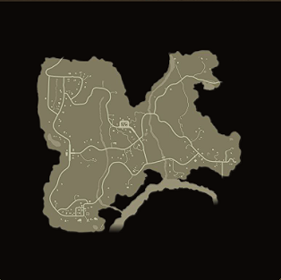
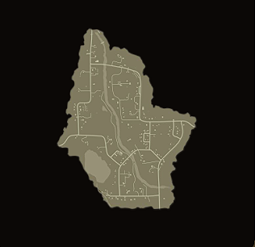
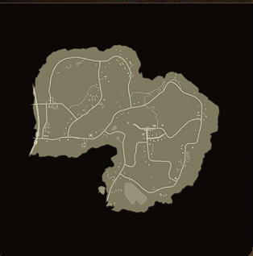
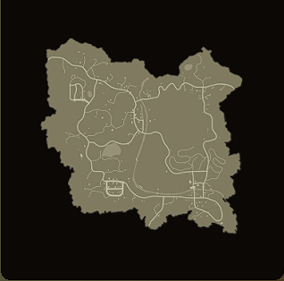

🧟♂️ Bienvenido a State of Decay 2: Sobrevive, Lidera, Reconstruye
State of Decay 2 es un videojuego de supervivencia y mundo abierto desarrollado por Undead Labs y publicado por Xbox Game Studios. Lanzado originalmente en 2018, el juego nos transporta a un Estados Unidos postapocalíptico asolado por una epidemia zombi, donde la humanidad lucha por sobrevivir en comunidades aisladas y constantemente amenazadas. A diferencia de otros títulos del género, State of Decay 2 se enfoca tanto en la acción como en la gestión de recursos y la toma de decisiones estratégicas. El jugador no controla a un solo protagonista, sino que lidera una comunidad de sobrevivientes, cada uno con habilidades, personalidades y relaciones únicas. La clave del éxito radica en mantener el equilibrio entre la exploración, el combate, la construcción de la base, y el bienestar emocional y físico de los miembros del grupo. Con soporte para modo cooperativo hasta cuatro jugadores, un sistema dinámico de eventos y una atmósfera inmersiva, State of Decay 2 ofrece una experiencia intensa y emocional, donde cada elección puede marcar la diferencia entre la vida y la muerte.
Los coches en State of Decay 2: supervivencia sobre ruedas
En State of Decay 2, los coches no son solo un medio de transporte: son herramientas de supervivencia esenciales. En un mundo infestado de zombis, recorrer largas distancias a pie puede ser una sentencia de muerte. Aquí es donde entran en juego los vehículos. Desde camionetas resistentes hasta deportivos veloces, cada coche tiene ventajas únicas que pueden marcar la diferencia entre la vida y la muerte. Los vehículos no solo te permiten moverte rápidamente entre ubicaciones, sino que también sirven como protección móvil contra hordas y pueden almacenar recursos en su maletero. Eso sí, requieren mantenimiento: se quedan sin gasolina, se dañan con facilidad si atropellas demasiados enemigos, y algunos necesitan ser reparados antes de poder usarlos. Dominar el uso de los coches en State of Decay 2 es clave para sobrevivir, explorar nuevos territorios y mantener viva a tu comunidad.
🚗 Tipos de coches y sus funciones
No todos los vehículos son iguales. Algunos son rápidos, otros resistentes, y algunos ofrecen gran capacidad de carga. Aquí tienes los principales tipos:
-
Deportivos:
rápidos, ideales para explorar o escapar, pero con poco espacio y resistencia.
-
SUVs y camionetas:
buen balance entre velocidad, resistencia y almacenamiento.
-
Camiones de carga y furgonetas:
lentos pero con gran capacidad de carga y buena protección.
-
Vehículos especiales:
modificados, con armaduras, almacenamiento mejorado o armas incorporadas (requieren planos y kits de mejora).
🔧 Cómo mantener tu coche en buen estado
-
Gasolina:
Cada coche necesita combustible. Lleva una gasolina de repuesto en el maletero.
-
Reparaciones:
Usa kits de reparación para arreglar coches dañados. Evita conducir por campos o chocar con zombis innecesariamente.
-
Desaparición de vehículos:
Si te alejas demasiado, un coche puede desaparecer. Usa el almacén de vehículos en tu base para guardarlos.
-
Estacionamiento estratégico:
Siempre aparca en zonas despejadas y con fácil salida. Evita bloquearte con hordas.
⚠️ Consejos clave
- 🚧 No abuses del atropello: daña el coche rápidamente.
- 🔄 Cambia de coche cuando esté muy dañado: evita que explote.
- 🧭 Utiliza los coches como puntos móviles de reabastecimiento.
- 🏁 Busca vehículos únicos repartidos por el mapa
- 🛠️ Mejora coches comunes en tu taller de vehículos si tienes los planos.
🔫 Las armas en State of Decay 2: supervivencia armada
En State of Decay 2, las armas son tan importantes como el sigilo, la estrategia o el vehículo que conduces. Elegir bien tu armamento puede marcar la diferencia entre limpiar una infestación o acabar rodeado y sin opciones.
⚔️ Tipos de armas
🗡️ Armas cuerpo a cuerpo
-
Ligeras:
espadas, katanas, machetes, cuchillos. — más rápidas, causan sangrado, decapitan con facilidad.
-
Contundentes:
bates de béisbol, mazos, palancas, tuberías. — daño por impacto, ideales para aturdir, derribar y romper puertas.
-
Pesadas:
mazas, hachas, bates grandes — mucho daño, pero más lentas y requieren resistencia.
🔫 Armas de fuego
-
Pistolas:
fáciles de manejar, poco ruido, ideales para emergencias.
-
Escopetas:
gran daño a corta distancia, pero muy ruidosas.
-
Rifles automáticos:
equilibrio entre daño, cadencia y alcance.
-
Rifles de francotirador:
mucho alcance, perfectos para eliminar amenazas a distancia.
-
Armas especiales:
lanzagranadas, armas silenciadas, armamento único.
🛠️ Mantenimiento y cuidado
-
🧼Reparaciones:
usa kits de reparación de armas para mantenerlas efectivas.
-
🛢️Munición:
lleva siempre munición extra, cada arma requiere un tipo específico.
-
⚠️Durabilidad:
las armas se desgastan, no las uses sin control.
-
🔧 Modificaciones:
Usalos para personalizar y mejorar tus armas.
📦 Uso estratégico
- 🏃 Cuerpo a cuerpo para exploración silenciosa.
- 🔥 Armas de fuego para emergencias o limpiar hordas.
- 🎯 Francotiradores para eliminar enemigos desde posiciones seguras.
- ⚔️ Combina tipos de armas según la misión.
⚠️ Consejos clave
- ✅ No lleves solo armas de fuego, el ruido atrae hordas.
- ✅ Cambia el arma cuando la durabilidad sea baja.
- ✅ Entrena a tus supervivientes en el uso de diferentes tipos de armas.
- ✅ Guarda las armas raras para situaciones críticas.
- ✅ Administra bien la munición; no siempre es fácil de encontrar.
🌍 Los Mapas en State of Decay 2: Territorio, Estrategia y Supervivencia
En State of Decay 2, los mapas no son solo escenarios: son el campo de batalla de tu comunidad, el terreno donde construirás tu base, buscarás recursos y enfrentarás las amenazas del apocalipsis. Elegir el mapa adecuado puede marcar la diferencia entre prosperar… o ser devorado por los zombis. El juego ofrece cinco mapas jugables, cada uno con su propia geografía, distribución de recursos, bases disponibles y estilo de juego. Aunque todos comparten las mecánicas principales, cada uno tiene características únicas que favorecen distintos enfoques estratégicos.
🏞️ Cascade Hills
Un mapa montañoso con pueblos dispersos, puentes, y un diseño que mezcla naturaleza con urbanismo. Tiene buenas carreteras y abundancia de vehículos, pero algunas zonas pueden resultar incómodas para moverse por su desnivel. Perfecto para quienes buscan una experiencia equilibrada y fácil de aprender.
🌾 Meagher Valley
El más llano de todos. Es ideal para los que quieren moverse rápido entre zonas y hacer recolección eficiente. Sus campos abiertos y estructuras industriales facilitan el acceso a recursos como materiales de construcción y alimentos. Además, sus bases están bien ubicadas y son fáciles de defender.
🏜️ Drucker County
Este mapa desértico y rocoso ofrece una experiencia más exigente. El terreno accidentado y los caminos bloqueados requieren planificación al moverse. A cambio, proporciona excelentes bases, muchas zonas industriales y algunos de los mejores recursos para construir. Ideal para jugadores que priorizan fortificaciones grandes y producción avanzada.
🌲 Providence Ridge
Ubicado en una zona forestal, este mapa destaca por su verticalidad, caminos estrechos y vistas panorámicas. Ofrece una experiencia más "natural", con bosques densos y menos estructuras urbanas. Moverse aquí puede ser más lento, pero sus bases están bien posicionadas para defensas estratégicas. Excelente para quienes buscan un desafío táctico mayor.
🧱 Trumbull Valley
El único mapa basado en la historia del primer State of Decay. Aquí se mezcla la jugabilidad sandbox con misiones narrativas y eventos especiales. El mapa es más denso y peligroso, con nuevas amenazas y zombis de plaga más frecuentes. Ideal para jugadores experimentados y amantes del lore.